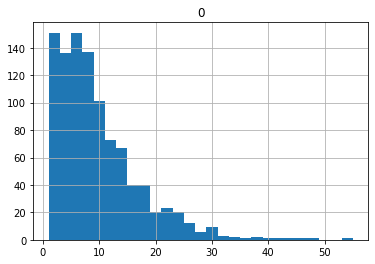

reset_seed()Implement Kalman model using FastAI
need to implement custom data preparation pipeline and loss function
hai_pathPath('/home/simone/Documents/uni/Thesis/GPFA_imputation/data/FLX_DE-Hai_FLUXNET2015_FULLSET_HH_2000-2012_1-4_float32.parquet')hai = pd.read_parquet(hai_path)
hai64 = pd.read_parquet(hai_path64)
hai_era = pd.read_parquet(hai_era_path)
hai_era64 = pd.read_parquet(hai_era_path64)Data Preparation
The aim of the data preparation pipeline is to: - take the original time series and split it into time blocks - for each block generate a random gap (need to figure out the properties of the gap) - split some time blocks for testing
the input of the pipeline is: - a dataframe containing all observations
the input of the model is: - observed data (potentially containing NaN where data is missing) - missing data mask (which is telling where the data is missing) - the data needs to be standardized
Utils
1) Block Index
the first step is to transfrom the original dataframe into blocks of a specified block_len
two different strategies are possible:
- contigous blocks
- random block in the dataframe
for now contigous blocks are used
BlockIndexTransform
BlockIndexTransform (idx:pandas.core.indexes.datetimes.DatetimeIndex, block_len:int=200, offset=1)
divide timeseries DataFrame index into blocks
blk = BlockIndexTransform(hai.index, 10)blkBlockIndexTransform
(list,object) -> encodes
hai.indexDatetimeIndex(['2000-01-01 00:30:00', '2000-01-01 01:00:00',
'2000-01-01 01:30:00', '2000-01-01 02:00:00',
'2000-01-01 02:30:00', '2000-01-01 03:00:00',
'2000-01-01 03:30:00', '2000-01-01 04:00:00',
'2000-01-01 04:30:00', '2000-01-01 05:00:00',
...
'2012-12-31 19:30:00', '2012-12-31 20:00:00',
'2012-12-31 20:30:00', '2012-12-31 21:00:00',
'2012-12-31 21:30:00', '2012-12-31 22:00:00',
'2012-12-31 22:30:00', '2012-12-31 23:00:00',
'2012-12-31 23:30:00', '2013-01-01 00:00:00'],
dtype='datetime64[ns]', name='time', length=227952, freq=None)blk([2,3])DatetimeIndex(['2000-01-01 12:30:00', '2000-01-01 13:00:00',
'2000-01-01 13:30:00', '2000-01-01 14:00:00',
'2000-01-01 14:30:00', '2000-01-01 15:00:00',
'2000-01-01 15:30:00', '2000-01-01 16:00:00',
'2000-01-01 16:30:00', '2000-01-01 17:00:00'],
dtype='datetime64[ns]', name='time', freq=None)blk([2,2])DatetimeIndex(['2000-01-01 12:00:00', '2000-01-01 12:30:00',
'2000-01-01 13:00:00', '2000-01-01 13:30:00',
'2000-01-01 14:00:00', '2000-01-01 14:30:00',
'2000-01-01 15:00:00', '2000-01-01 15:30:00',
'2000-01-01 16:00:00', '2000-01-01 16:30:00'],
dtype='datetime64[ns]', name='time', freq=None)2) Meteo Imp Block DataFrames
Get a chunck out of dataframes given an index
DataControl
DataControl (data:pandas.core.frame.DataFrame, control:pandas.core.frame.DataFrame)
df = hai.loc[blk([1,0])]df.rename(columns=_rename_lag(1))| TA_lag_1 | SW_IN_lag_1 | VPD_lag_1 | |
|---|---|---|---|
| time | |||
| 2000-01-01 06:00:00 | -0.23 | 0.00 | 0.122 |
| 2000-01-01 06:30:00 | -0.22 | 0.00 | 0.098 |
| 2000-01-01 07:00:00 | -0.24 | 0.00 | 0.066 |
| 2000-01-01 07:30:00 | -0.23 | 0.00 | 0.044 |
| 2000-01-01 08:00:00 | -0.22 | 0.00 | 0.026 |
| 2000-01-01 08:30:00 | -0.19 | 0.45 | 0.016 |
| 2000-01-01 09:00:00 | -0.14 | 3.70 | 0.010 |
| 2000-01-01 09:30:00 | -0.03 | 7.26 | 0.006 |
| 2000-01-01 10:00:00 | 0.04 | 12.24 | 0.006 |
| 2000-01-01 10:30:00 | 0.10 | 16.51 | 0.006 |
_lag_df(df, 1)| TA_lag_1 | SW_IN_lag_1 | VPD_lag_1 | |
|---|---|---|---|
| time | |||
| 2000-01-01 06:00:00 | NaN | NaN | NaN |
| 2000-01-01 06:30:00 | -0.23 | 0.00 | 0.122 |
| 2000-01-01 07:00:00 | -0.22 | 0.00 | 0.098 |
| 2000-01-01 07:30:00 | -0.24 | 0.00 | 0.066 |
| 2000-01-01 08:00:00 | -0.23 | 0.00 | 0.044 |
| 2000-01-01 08:30:00 | -0.22 | 0.00 | 0.026 |
| 2000-01-01 09:00:00 | -0.19 | 0.45 | 0.016 |
| 2000-01-01 09:30:00 | -0.14 | 3.70 | 0.010 |
| 2000-01-01 10:00:00 | -0.03 | 7.26 | 0.006 |
| 2000-01-01 10:30:00 | 0.04 | 12.24 | 0.006 |
_add_lags_df(df, [1,2])| TA | SW_IN | VPD | TA_lag_1 | SW_IN_lag_1 | VPD_lag_1 | TA_lag_2 | SW_IN_lag_2 | VPD_lag_2 | |
|---|---|---|---|---|---|---|---|---|---|
| time | |||||||||
| 2000-01-01 06:00:00 | -0.23 | 0.00 | 0.122 | NaN | NaN | NaN | NaN | NaN | NaN |
| 2000-01-01 06:30:00 | -0.22 | 0.00 | 0.098 | -0.23 | 0.00 | 0.122 | NaN | NaN | NaN |
| 2000-01-01 07:00:00 | -0.24 | 0.00 | 0.066 | -0.22 | 0.00 | 0.098 | -0.23 | 0.00 | 0.122 |
| 2000-01-01 07:30:00 | -0.23 | 0.00 | 0.044 | -0.24 | 0.00 | 0.066 | -0.22 | 0.00 | 0.098 |
| 2000-01-01 08:00:00 | -0.22 | 0.00 | 0.026 | -0.23 | 0.00 | 0.044 | -0.24 | 0.00 | 0.066 |
| 2000-01-01 08:30:00 | -0.19 | 0.45 | 0.016 | -0.22 | 0.00 | 0.026 | -0.23 | 0.00 | 0.044 |
| 2000-01-01 09:00:00 | -0.14 | 3.70 | 0.010 | -0.19 | 0.45 | 0.016 | -0.22 | 0.00 | 0.026 |
| 2000-01-01 09:30:00 | -0.03 | 7.26 | 0.006 | -0.14 | 3.70 | 0.010 | -0.19 | 0.45 | 0.016 |
| 2000-01-01 10:00:00 | 0.04 | 12.24 | 0.006 | -0.03 | 7.26 | 0.006 | -0.14 | 3.70 | 0.010 |
| 2000-01-01 10:30:00 | 0.10 | 16.51 | 0.006 | 0.04 | 12.24 | 0.006 | -0.03 | 7.26 | 0.006 |
BlockDfTransform
BlockDfTransform (data:pandas.core.frame.DataFrame, control:pandas.core.frame.DataFrame, control_lags:Union[int,Iterable[int]])
divide timeseries DataFrame index into blocks
blkdf = BlockDfTransform(hai, hai_era, 1)blkdf(blk([1,2]))| TA | SW_IN | VPD | |
|---|---|---|---|
| time | |||
| 2000-01-01 07:00:00 | -0.2400 | 0.0000 | 0.0660 |
| 2000-01-01 07:30:00 | -0.2300 | 0.0000 | 0.0440 |
| 2000-01-01 08:00:00 | -0.2200 | 0.0000 | 0.0260 |
| 2000-01-01 08:30:00 | -0.1900 | 0.4500 | 0.0160 |
| 2000-01-01 09:00:00 | -0.1400 | 3.7000 | 0.0100 |
| 2000-01-01 09:30:00 | -0.0300 | 7.2600 | 0.0060 |
| 2000-01-01 10:00:00 | 0.0400 | 12.2400 | 0.0060 |
| 2000-01-01 10:30:00 | 0.1000 | 16.5100 | 0.0060 |
| 2000-01-01 11:00:00 | 0.1800 | 24.7300 | 0.0110 |
| 2000-01-01 11:30:00 | 0.2100 | 47.4200 | 0.0190 |
control
| TA_ERA | SW_IN_ERA | VPD_ERA | TA_ERA_lag_1 | SW_IN_ERA_lag_1 | VPD_ERA_lag_1 | |
|---|---|---|---|---|---|---|
| time | ||||||
| 2000-01-01 07:00:00 | -0.1420 | 0.0000 | 0.5100 | -0.2110 | 0.0000 | 0.5060 |
| 2000-01-01 07:30:00 | -0.0740 | 0.0000 | 0.5150 | -0.1420 | 0.0000 | 0.5100 |
| 2000-01-01 08:00:00 | 0.0440 | 0.0000 | 0.5270 | -0.0740 | 0.0000 | 0.5150 |
| 2000-01-01 08:30:00 | 0.1610 | 0.0000 | 0.5390 | 0.0440 | 0.0000 | 0.5270 |
| 2000-01-01 09:00:00 | 0.2790 | 2.6550 | 0.5510 | 0.1610 | 0.0000 | 0.5390 |
| 2000-01-01 09:30:00 | 0.3960 | 7.0800 | 0.5630 | 0.2790 | 2.6550 | 0.5510 |
| 2000-01-01 10:00:00 | 0.5140 | 10.9880 | 0.5750 | 0.3960 | 7.0800 | 0.5630 |
| 2000-01-01 10:30:00 | 0.6310 | 18.0120 | 0.5860 | 0.5140 | 10.9880 | 0.5750 |
| 2000-01-01 11:00:00 | 0.7520 | 21.3900 | 0.5880 | 0.6310 | 18.0120 | 0.5860 |
| 2000-01-01 11:30:00 | 0.8730 | 23.9050 | 0.5900 | 0.7520 | 21.3900 | 0.5880 |
taking a day in the summer so there is an higher values for the variables
blkdf(blk([800,0])).data| TA | SW_IN | VPD | |
|---|---|---|---|
| time | |||
| 2000-06-15 17:00:00 | 14.22 | 224.800003 | 5.799 |
| 2000-06-15 17:30:00 | 14.11 | 195.279999 | 6.577 |
| 2000-06-15 18:00:00 | 14.23 | 244.169998 | 6.931 |
| 2000-06-15 18:30:00 | 14.40 | 253.919998 | 7.286 |
| 2000-06-15 19:00:00 | 14.09 | 177.309998 | 7.251 |
| 2000-06-15 19:30:00 | 13.71 | 97.070000 | 6.683 |
| 2000-06-15 20:00:00 | 13.08 | 39.709999 | 5.851 |
| 2000-06-15 20:30:00 | 12.41 | 10.650000 | 5.254 |
| 2000-06-15 21:00:00 | 12.27 | 0.320000 | 5.164 |
| 2000-06-15 21:30:00 | 12.20 | 0.000000 | 5.037 |
tfms1 = TfmdLists([[800,0],[801,0],[802,0],[803,0]], [BlockIndexTransform(hai.index, 10), BlockDfTransform(hai, hai_era, control_lags=1)])tfms1[0]| TA | SW_IN | VPD | |
|---|---|---|---|
| time | |||
| 2000-06-15 17:00:00 | 14.2200 | 224.8000 | 5.7990 |
| 2000-06-15 17:30:00 | 14.1100 | 195.2800 | 6.5770 |
| 2000-06-15 18:00:00 | 14.2300 | 244.1700 | 6.9310 |
| 2000-06-15 18:30:00 | 14.4000 | 253.9200 | 7.2860 |
| 2000-06-15 19:00:00 | 14.0900 | 177.3100 | 7.2510 |
| 2000-06-15 19:30:00 | 13.7100 | 97.0700 | 6.6830 |
| 2000-06-15 20:00:00 | 13.0800 | 39.7100 | 5.8510 |
| 2000-06-15 20:30:00 | 12.4100 | 10.6500 | 5.2540 |
| 2000-06-15 21:00:00 | 12.2700 | 0.3200 | 5.1640 |
| 2000-06-15 21:30:00 | 12.2000 | 0.0000 | 5.0370 |
control
| TA_ERA | SW_IN_ERA | VPD_ERA | TA_ERA_lag_1 | SW_IN_ERA_lag_1 | VPD_ERA_lag_1 | |
|---|---|---|---|---|---|---|
| time | ||||||
| 2000-06-15 17:00:00 | 15.0500 | 255.1930 | 5.1020 | 15.1390 | 287.1000 | 4.9000 |
| 2000-06-15 17:30:00 | 14.9610 | 221.4270 | 5.3050 | 15.0500 | 255.1930 | 5.1020 |
| 2000-06-15 18:00:00 | 14.8720 | 186.3800 | 5.5070 | 14.9610 | 221.4270 | 5.3050 |
| 2000-06-15 18:30:00 | 14.7830 | 150.6500 | 5.7100 | 14.8720 | 186.3800 | 5.5070 |
| 2000-06-15 19:00:00 | 14.6940 | 114.8490 | 5.9120 | 14.7830 | 150.6500 | 5.7100 |
| 2000-06-15 19:30:00 | 14.6060 | 34.7280 | 6.1140 | 14.6940 | 114.8490 | 5.9120 |
| 2000-06-15 20:00:00 | 14.3800 | 19.8430 | 6.0740 | 14.6060 | 34.7280 | 6.1140 |
| 2000-06-15 20:30:00 | 14.1550 | 5.7120 | 6.0340 | 14.3800 | 19.8430 | 6.0740 |
| 2000-06-15 21:00:00 | 13.9290 | 0.0000 | 5.9940 | 14.1550 | 5.7120 | 6.0340 |
| 2000-06-15 21:30:00 | 13.7040 | 0.0000 | 5.9540 | 13.9290 | 0.0000 | 5.9940 |
3) Gaps
adds a mask which includes a random gap
Make random Gap
idx = L(*tfms1[0].data.columns).argwhere(lambda x: x in ['TA','SW_IN'])mask = np.ones_like(tfms1[0].data, dtype=bool)maskarray([[ True, True, True],
[ True, True, True],
[ True, True, True],
[ True, True, True],
[ True, True, True],
[ True, True, True],
[ True, True, True],
[ True, True, True],
[ True, True, True],
[ True, True, True]])def _make_random_gap(
gap_length: int, # The length of the gap
total_length: int, # The total number of observations
gap_start: int # Optional start of gap
)-> np.ndarray: # [total_length] array of bools to indicicate if the data is missing or not
"Add a continous gap of given length at random position"
if(gap_length >= total_length):
return np.repeat(True, total_length)
return np.hstack([
np.repeat(False, gap_start),
np.repeat(True, gap_length),
np.repeat(False, total_length - (gap_length + gap_start))
])gap = _make_random_gap(2, 10, 2)gaparray([False, False, True, True, False, False, False, False, False,
False])np.argwhere(gap)array([[2],
[3]])mask[np.argwhere(gap), idx] = Falsemaskarray([[ True, True, True],
[ True, True, True],
[False, False, True],
[False, False, True],
[ True, True, True],
[ True, True, True],
[ True, True, True],
[ True, True, True],
[ True, True, True],
[ True, True, True]])mask[gap]array([[False, False, True],
[False, False, True]])Gap Len Generator
The gap lengths are drawn from a gamma distribution, so we have a long tail and a min value of 0, but compared to an exponentail distributions we don’t have many gaps of len 0
\[ p(x)=\frac{1}{\Gamma(k) \theta^k} x^{k - 1} e^{-\frac{x}{\theta}}\]
\[\begin{align}\mu &= k\theta\\ m &= (k-1)\theta \end{align}\] where \(m\) is the mode and \(\mu\) is the mean (for \(k>1\)), which is what we want
import matplotlib.pyplot as plt
import scipy.special as sps
mean = 10
scale = mean * .6
shape = mean/scale
mode = (shape-1)*scale
x = np.arange(0,100)
y = x**(shape-1)*(np.exp(-x/scale) / (sps.gamma(shape)*scale**shape))
plt.plot(x, y)
plt.show()
This is a very guessestimate of a good probability density distribution of the gap len. The actual measure should come from the fluxnet data
gen_gap_len
gen_gap_len (mean:float, min_v=1)
next(gen_gap_len(1))2g_len = gen_gap_len(10)gap_lens_sample = pd.DataFrame([next(g_len) for _ in range(1000)])
gap_lens_sample.hist(bins=gap_lens_sample[0].max()//2)array([[<AxesSubplot: title={'center': '0'}>]], dtype=object)
Var Sel Generator
draws a number of variables from a uniform distribution from 1 to the max n of vars and then select the variables with equal probability
gen_var_sel
gen_var_sel (vars)
g_var = gen_var_sel(list("abcdefg"))[next(g_var) for _ in range(5)][array(['e', 'a', 'c', 'f', 'd', 'g', 'b'], dtype='<U1'),
array(['b', 'g', 'e', 'f', 'c'], dtype='<U1'),
array(['e', 'a', 'b', 'g', 'c', 'd'], dtype='<U1'),
array(['a'], dtype='<U1'),
array(['e', 'd', 'c', 'g', 'b', 'f', 'a'], dtype='<U1')]g_var = gen_var_sel(["a", "bb", "ccc"])[next(g_var) for _ in range(5)][array(['ccc', 'a'], dtype='<U3'),
array(['bb', 'ccc'], dtype='<U3'),
array(['bb', 'ccc'], dtype='<U3'),
array(['a', 'bb', 'ccc'], dtype='<U3'),
array(['a', 'bb', 'ccc'], dtype='<U3')]g_var = gen_var_sel(['TA', 'VPD', 'SW_IN'])[next(g_var) for _ in range(10)][array(['TA', 'VPD', 'SW_IN'], dtype='<U5'),
array(['VPD', 'SW_IN'], dtype='<U5'),
array(['TA'], dtype='<U5'),
array(['SW_IN', 'VPD', 'TA'], dtype='<U5'),
array(['SW_IN', 'VPD', 'TA'], dtype='<U5'),
array(['TA', 'VPD'], dtype='<U5'),
array(['VPD'], dtype='<U5'),
array(['TA'], dtype='<U5'),
array(['TA', 'SW_IN'], dtype='<U5'),
array(['TA', 'VPD', 'SW_IN'], dtype='<U5')]Add Gap Transform
as_generator
as_generator (x:collections.abc.Generator|object)
Maybe convert iterable to generator
isinstance(g_var, Iterable)Trueas_generator(g_var), next(as_generator(g_var))(<generator object gen_var_sel>,
array(['SW_IN', 'VPD'], dtype='<U5'))as_generator([1,2]), next(as_generator([1,2]))(<itertools.cycle>, [1, 2])MeteoImpDf
MeteoImpDf (*args)
Initialize self. See help(type(self)) for accurate signature.
AddGapTransform
AddGapTransform (variables, gap_length, gap_start)
Adds a random gap to a dataframe
a_gap = AddGapTransform(['TA', 'VPD'], 5, 1)
a_gapAddGapTransform
(DataControl,object) -> encodes
[a_gap._yield_gens().variables for _ in range(5)], [a_gap._yield_gens().gap_length for _ in range(5)]([['TA', 'VPD'], ['TA', 'VPD'], ['TA', 'VPD'], ['TA', 'VPD'], ['TA', 'VPD']],
[5, 5, 5, 5, 5])g_var = gen_var_sel(['TA', 'VPD'])a_gap2 = AddGapTransform(g_var, gen_gap_len(5), 1)
a_gap2AddGapTransform
(DataControl,object) -> encodes
[a_gap2._yield_gens().variables for _ in range(5)], [a_gap2._yield_gens().gap_length for _ in range(5)]([array(['VPD'], dtype='<U3'),
array(['VPD', 'TA'], dtype='<U3'),
array(['TA', 'VPD'], dtype='<U3'),
array(['TA', 'VPD'], dtype='<U3'),
array(['VPD'], dtype='<U3')],
[4, 2, 3, 2, 4])a_gap(tfms1[0])| TA | SW_IN | VPD | |
|---|---|---|---|
| time | |||
| 2000-06-15 17:00:00 | 14.2200 | 224.8000 | 5.7990 |
| 2000-06-15 17:30:00 | 14.1100 | 195.2800 | 6.5770 |
| 2000-06-15 18:00:00 | 14.2300 | 244.1700 | 6.9310 |
| 2000-06-15 18:30:00 | 14.4000 | 253.9200 | 7.2860 |
| 2000-06-15 19:00:00 | 14.0900 | 177.3100 | 7.2510 |
| 2000-06-15 19:30:00 | 13.7100 | 97.0700 | 6.6830 |
| 2000-06-15 20:00:00 | 13.0800 | 39.7100 | 5.8510 |
| 2000-06-15 20:30:00 | 12.4100 | 10.6500 | 5.2540 |
| 2000-06-15 21:00:00 | 12.2700 | 0.3200 | 5.1640 |
| 2000-06-15 21:30:00 | 12.2000 | 0.0000 | 5.0370 |
mask
| TA | SW_IN | VPD | |
|---|---|---|---|
| time | |||
| 2000-06-15 17:00:00 | True | True | True |
| 2000-06-15 17:30:00 | False | True | False |
| 2000-06-15 18:00:00 | False | True | False |
| 2000-06-15 18:30:00 | False | True | False |
| 2000-06-15 19:00:00 | False | True | False |
| 2000-06-15 19:30:00 | False | True | False |
| 2000-06-15 20:00:00 | True | True | True |
| 2000-06-15 20:30:00 | True | True | True |
| 2000-06-15 21:00:00 | True | True | True |
| 2000-06-15 21:30:00 | True | True | True |
control
| TA_ERA | SW_IN_ERA | VPD_ERA | TA_ERA_lag_1 | SW_IN_ERA_lag_1 | VPD_ERA_lag_1 | |
|---|---|---|---|---|---|---|
| time | ||||||
| 2000-06-15 17:00:00 | 15.0500 | 255.1930 | 5.1020 | 15.1390 | 287.1000 | 4.9000 |
| 2000-06-15 17:30:00 | 14.9610 | 221.4270 | 5.3050 | 15.0500 | 255.1930 | 5.1020 |
| 2000-06-15 18:00:00 | 14.8720 | 186.3800 | 5.5070 | 14.9610 | 221.4270 | 5.3050 |
| 2000-06-15 18:30:00 | 14.7830 | 150.6500 | 5.7100 | 14.8720 | 186.3800 | 5.5070 |
| 2000-06-15 19:00:00 | 14.6940 | 114.8490 | 5.9120 | 14.7830 | 150.6500 | 5.7100 |
| 2000-06-15 19:30:00 | 14.6060 | 34.7280 | 6.1140 | 14.6940 | 114.8490 | 5.9120 |
| 2000-06-15 20:00:00 | 14.3800 | 19.8430 | 6.0740 | 14.6060 | 34.7280 | 6.1140 |
| 2000-06-15 20:30:00 | 14.1550 | 5.7120 | 6.0340 | 14.3800 | 19.8430 | 6.0740 |
| 2000-06-15 21:00:00 | 13.9290 | 0.0000 | 5.9940 | 14.1550 | 5.7120 | 6.0340 |
| 2000-06-15 21:30:00 | 13.7040 | 0.0000 | 5.9540 | 13.9290 | 0.0000 | 5.9940 |
a_gap2(tfms1[0])| TA | SW_IN | VPD | |
|---|---|---|---|
| time | |||
| 2000-06-15 17:00:00 | 14.2200 | 224.8000 | 5.7990 |
| 2000-06-15 17:30:00 | 14.1100 | 195.2800 | 6.5770 |
| 2000-06-15 18:00:00 | 14.2300 | 244.1700 | 6.9310 |
| 2000-06-15 18:30:00 | 14.4000 | 253.9200 | 7.2860 |
| 2000-06-15 19:00:00 | 14.0900 | 177.3100 | 7.2510 |
| 2000-06-15 19:30:00 | 13.7100 | 97.0700 | 6.6830 |
| 2000-06-15 20:00:00 | 13.0800 | 39.7100 | 5.8510 |
| 2000-06-15 20:30:00 | 12.4100 | 10.6500 | 5.2540 |
| 2000-06-15 21:00:00 | 12.2700 | 0.3200 | 5.1640 |
| 2000-06-15 21:30:00 | 12.2000 | 0.0000 | 5.0370 |
mask
| TA | SW_IN | VPD | |
|---|---|---|---|
| time | |||
| 2000-06-15 17:00:00 | True | True | True |
| 2000-06-15 17:30:00 | False | True | False |
| 2000-06-15 18:00:00 | False | True | False |
| 2000-06-15 18:30:00 | False | True | False |
| 2000-06-15 19:00:00 | True | True | True |
| 2000-06-15 19:30:00 | True | True | True |
| 2000-06-15 20:00:00 | True | True | True |
| 2000-06-15 20:30:00 | True | True | True |
| 2000-06-15 21:00:00 | True | True | True |
| 2000-06-15 21:30:00 | True | True | True |
control
| TA_ERA | SW_IN_ERA | VPD_ERA | TA_ERA_lag_1 | SW_IN_ERA_lag_1 | VPD_ERA_lag_1 | |
|---|---|---|---|---|---|---|
| time | ||||||
| 2000-06-15 17:00:00 | 15.0500 | 255.1930 | 5.1020 | 15.1390 | 287.1000 | 4.9000 |
| 2000-06-15 17:30:00 | 14.9610 | 221.4270 | 5.3050 | 15.0500 | 255.1930 | 5.1020 |
| 2000-06-15 18:00:00 | 14.8720 | 186.3800 | 5.5070 | 14.9610 | 221.4270 | 5.3050 |
| 2000-06-15 18:30:00 | 14.7830 | 150.6500 | 5.7100 | 14.8720 | 186.3800 | 5.5070 |
| 2000-06-15 19:00:00 | 14.6940 | 114.8490 | 5.9120 | 14.7830 | 150.6500 | 5.7100 |
| 2000-06-15 19:30:00 | 14.6060 | 34.7280 | 6.1140 | 14.6940 | 114.8490 | 5.9120 |
| 2000-06-15 20:00:00 | 14.3800 | 19.8430 | 6.0740 | 14.6060 | 34.7280 | 6.1140 |
| 2000-06-15 20:30:00 | 14.1550 | 5.7120 | 6.0340 | 14.3800 | 19.8430 | 6.0740 |
| 2000-06-15 21:00:00 | 13.9290 | 0.0000 | 5.9940 | 14.1550 | 5.7120 | 6.0340 |
| 2000-06-15 21:30:00 | 13.7040 | 0.0000 | 5.9540 | 13.9290 | 0.0000 | 5.9940 |
for i in range(800):
assert not a_gap2(blkdf(blk([i, 0]))).mask.to_numpy().all()a_gap2(blkdf(blk([i, 0]))).mask.to_numpy().all()Falsea_gap2(tfms1[3]).mask.to_numpy().all()Falsei799tfms2 = TfmdLists(tfms1.items, [*tfms1.fs, AddGapTransform(['TA','SW_IN'], 2, 2)])tfms2[0]| TA | SW_IN | VPD | |
|---|---|---|---|
| time | |||
| 2000-06-15 17:00:00 | 14.2200 | 224.8000 | 5.7990 |
| 2000-06-15 17:30:00 | 14.1100 | 195.2800 | 6.5770 |
| 2000-06-15 18:00:00 | 14.2300 | 244.1700 | 6.9310 |
| 2000-06-15 18:30:00 | 14.4000 | 253.9200 | 7.2860 |
| 2000-06-15 19:00:00 | 14.0900 | 177.3100 | 7.2510 |
| 2000-06-15 19:30:00 | 13.7100 | 97.0700 | 6.6830 |
| 2000-06-15 20:00:00 | 13.0800 | 39.7100 | 5.8510 |
| 2000-06-15 20:30:00 | 12.4100 | 10.6500 | 5.2540 |
| 2000-06-15 21:00:00 | 12.2700 | 0.3200 | 5.1640 |
| 2000-06-15 21:30:00 | 12.2000 | 0.0000 | 5.0370 |
mask
| TA | SW_IN | VPD | |
|---|---|---|---|
| time | |||
| 2000-06-15 17:00:00 | True | True | True |
| 2000-06-15 17:30:00 | True | True | True |
| 2000-06-15 18:00:00 | False | False | True |
| 2000-06-15 18:30:00 | False | False | True |
| 2000-06-15 19:00:00 | True | True | True |
| 2000-06-15 19:30:00 | True | True | True |
| 2000-06-15 20:00:00 | True | True | True |
| 2000-06-15 20:30:00 | True | True | True |
| 2000-06-15 21:00:00 | True | True | True |
| 2000-06-15 21:30:00 | True | True | True |
control
| TA_ERA | SW_IN_ERA | VPD_ERA | TA_ERA_lag_1 | SW_IN_ERA_lag_1 | VPD_ERA_lag_1 | |
|---|---|---|---|---|---|---|
| time | ||||||
| 2000-06-15 17:00:00 | 15.0500 | 255.1930 | 5.1020 | 15.1390 | 287.1000 | 4.9000 |
| 2000-06-15 17:30:00 | 14.9610 | 221.4270 | 5.3050 | 15.0500 | 255.1930 | 5.1020 |
| 2000-06-15 18:00:00 | 14.8720 | 186.3800 | 5.5070 | 14.9610 | 221.4270 | 5.3050 |
| 2000-06-15 18:30:00 | 14.7830 | 150.6500 | 5.7100 | 14.8720 | 186.3800 | 5.5070 |
| 2000-06-15 19:00:00 | 14.6940 | 114.8490 | 5.9120 | 14.7830 | 150.6500 | 5.7100 |
| 2000-06-15 19:30:00 | 14.6060 | 34.7280 | 6.1140 | 14.6940 | 114.8490 | 5.9120 |
| 2000-06-15 20:00:00 | 14.3800 | 19.8430 | 6.0740 | 14.6060 | 34.7280 | 6.1140 |
| 2000-06-15 20:30:00 | 14.1550 | 5.7120 | 6.0340 | 14.3800 | 19.8430 | 6.0740 |
| 2000-06-15 21:00:00 | 13.9290 | 0.0000 | 5.9940 | 14.1550 | 5.7120 | 6.0340 |
| 2000-06-15 21:30:00 | 13.7040 | 0.0000 | 5.9540 | 13.9290 | 0.0000 | 5.9940 |
m_df = tfms2[0]Tidy
MeteoImpDf.tidy
MeteoImpDf.tidy (control:Optional[dict[str,str]]=None)
| Type | Default | Details | |
|---|---|---|---|
| control | Optional | None | mapping from control var names to obs names |
m_df.tidy()| time | variable | value | is_present | |
|---|---|---|---|---|
| 0 | 2000-06-15 17:00:00 | TA | 14.220000 | True |
| 1 | 2000-06-15 17:30:00 | TA | 14.110000 | True |
| 2 | 2000-06-15 18:00:00 | TA | 14.230000 | False |
| 3 | 2000-06-15 18:30:00 | TA | 14.400000 | False |
| 4 | 2000-06-15 19:00:00 | TA | 14.090000 | True |
| 5 | 2000-06-15 19:30:00 | TA | 13.710000 | True |
| 6 | 2000-06-15 20:00:00 | TA | 13.080000 | True |
| 7 | 2000-06-15 20:30:00 | TA | 12.410000 | True |
| 8 | 2000-06-15 21:00:00 | TA | 12.270000 | True |
| 9 | 2000-06-15 21:30:00 | TA | 12.200000 | True |
| 10 | 2000-06-15 17:00:00 | SW_IN | 224.800003 | True |
| 11 | 2000-06-15 17:30:00 | SW_IN | 195.279999 | True |
| 12 | 2000-06-15 18:00:00 | SW_IN | 244.169998 | False |
| 13 | 2000-06-15 18:30:00 | SW_IN | 253.919998 | False |
| 14 | 2000-06-15 19:00:00 | SW_IN | 177.309998 | True |
| 15 | 2000-06-15 19:30:00 | SW_IN | 97.070000 | True |
| 16 | 2000-06-15 20:00:00 | SW_IN | 39.709999 | True |
| 17 | 2000-06-15 20:30:00 | SW_IN | 10.650000 | True |
| 18 | 2000-06-15 21:00:00 | SW_IN | 0.320000 | True |
| 19 | 2000-06-15 21:30:00 | SW_IN | 0.000000 | True |
| 20 | 2000-06-15 17:00:00 | VPD | 5.799000 | True |
| 21 | 2000-06-15 17:30:00 | VPD | 6.577000 | True |
| 22 | 2000-06-15 18:00:00 | VPD | 6.931000 | True |
| 23 | 2000-06-15 18:30:00 | VPD | 7.286000 | True |
| 24 | 2000-06-15 19:00:00 | VPD | 7.251000 | True |
| 25 | 2000-06-15 19:30:00 | VPD | 6.683000 | True |
| 26 | 2000-06-15 20:00:00 | VPD | 5.851000 | True |
| 27 | 2000-06-15 20:30:00 | VPD | 5.254000 | True |
| 28 | 2000-06-15 21:00:00 | VPD | 5.164000 | True |
| 29 | 2000-06-15 21:30:00 | VPD | 5.037000 | True |
m_df.tidy(control={'TA_ERA': 'TA'})| time | variable | value | control | is_present | |
|---|---|---|---|---|---|
| 0 | 2000-06-15 17:00:00 | TA | 14.220000 | 15.050 | True |
| 1 | 2000-06-15 17:30:00 | TA | 14.110000 | 14.961 | True |
| 2 | 2000-06-15 18:00:00 | TA | 14.230000 | 14.872 | False |
| 3 | 2000-06-15 18:30:00 | TA | 14.400000 | 14.783 | False |
| 4 | 2000-06-15 19:00:00 | TA | 14.090000 | 14.694 | True |
| 5 | 2000-06-15 19:30:00 | TA | 13.710000 | 14.606 | True |
| 6 | 2000-06-15 20:00:00 | TA | 13.080000 | 14.380 | True |
| 7 | 2000-06-15 20:30:00 | TA | 12.410000 | 14.155 | True |
| 8 | 2000-06-15 21:00:00 | TA | 12.270000 | 13.929 | True |
| 9 | 2000-06-15 21:30:00 | TA | 12.200000 | 13.704 | True |
| 10 | 2000-06-15 17:00:00 | SW_IN | 224.800003 | NaN | True |
| 11 | 2000-06-15 17:30:00 | SW_IN | 195.279999 | NaN | True |
| 12 | 2000-06-15 18:00:00 | SW_IN | 244.169998 | NaN | False |
| 13 | 2000-06-15 18:30:00 | SW_IN | 253.919998 | NaN | False |
| 14 | 2000-06-15 19:00:00 | SW_IN | 177.309998 | NaN | True |
| 15 | 2000-06-15 19:30:00 | SW_IN | 97.070000 | NaN | True |
| 16 | 2000-06-15 20:00:00 | SW_IN | 39.709999 | NaN | True |
| 17 | 2000-06-15 20:30:00 | SW_IN | 10.650000 | NaN | True |
| 18 | 2000-06-15 21:00:00 | SW_IN | 0.320000 | NaN | True |
| 19 | 2000-06-15 21:30:00 | SW_IN | 0.000000 | NaN | True |
| 20 | 2000-06-15 17:00:00 | VPD | 5.799000 | NaN | True |
| 21 | 2000-06-15 17:30:00 | VPD | 6.577000 | NaN | True |
| 22 | 2000-06-15 18:00:00 | VPD | 6.931000 | NaN | True |
| 23 | 2000-06-15 18:30:00 | VPD | 7.286000 | NaN | True |
| 24 | 2000-06-15 19:00:00 | VPD | 7.251000 | NaN | True |
| 25 | 2000-06-15 19:30:00 | VPD | 6.683000 | NaN | True |
| 26 | 2000-06-15 20:00:00 | VPD | 5.851000 | NaN | True |
| 27 | 2000-06-15 20:30:00 | VPD | 5.254000 | NaN | True |
| 28 | 2000-06-15 21:00:00 | VPD | 5.164000 | NaN | True |
| 29 | 2000-06-15 21:30:00 | VPD | 5.037000 | NaN | True |
Plotting
Rug
plot_rug(m_df.tidy())df = m_df.tidy()df = df[df.variable=="TA"].copy()df['row_number'] = df.reset_index().indexdf| time | variable | value | is_present | row_number | |
|---|---|---|---|---|---|
| 0 | 2000-06-15 17:00:00 | TA | 14.22 | True | 0 |
| 1 | 2000-06-15 17:30:00 | TA | 14.11 | True | 1 |
| 2 | 2000-06-15 18:00:00 | TA | 14.23 | False | 2 |
| 3 | 2000-06-15 18:30:00 | TA | 14.40 | False | 3 |
| 4 | 2000-06-15 19:00:00 | TA | 14.09 | True | 4 |
| 5 | 2000-06-15 19:30:00 | TA | 13.71 | True | 5 |
| 6 | 2000-06-15 20:00:00 | TA | 13.08 | True | 6 |
| 7 | 2000-06-15 20:30:00 | TA | 12.41 | True | 7 |
| 8 | 2000-06-15 21:00:00 | TA | 12.27 | True | 8 |
| 9 | 2000-06-15 21:30:00 | TA | 12.20 | True | 9 |
df.iloc[1]time 2000-06-15 17:30:00
variable TA
value 14.11
is_present True
row_number 1
Name: 1, dtype: objectdf.loc[2, "is_present"] = Truedf| time | variable | value | is_present | row_number | |
|---|---|---|---|---|---|
| 0 | 2000-06-15 17:00:00 | TA | 14.22 | True | 0 |
| 1 | 2000-06-15 17:30:00 | TA | 14.11 | True | 1 |
| 2 | 2000-06-15 18:00:00 | TA | 14.23 | True | 2 |
| 3 | 2000-06-15 18:30:00 | TA | 14.40 | False | 3 |
| 4 | 2000-06-15 19:00:00 | TA | 14.09 | True | 4 |
| 5 | 2000-06-15 19:30:00 | TA | 13.71 | True | 5 |
| 6 | 2000-06-15 20:00:00 | TA | 13.08 | True | 6 |
| 7 | 2000-06-15 20:30:00 | TA | 12.41 | True | 7 |
| 8 | 2000-06-15 21:00:00 | TA | 12.27 | True | 8 |
| 9 | 2000-06-15 21:30:00 | TA | 12.20 | True | 9 |
i = 1
prev, curr, _next= df.iloc[i-1], df.iloc[i], df.iloc[i+1]prev, curr, _next(time 2000-06-15 17:00:00
variable TA
value 14.22
is_present True
row_number 0
Name: 0, dtype: object,
time 2000-06-15 17:30:00
variable TA
value 14.11
is_present True
row_number 1
Name: 1, dtype: object,
time 2000-06-15 18:00:00
variable TA
value 14.23
is_present True
row_number 2
Name: 2, dtype: object)df| time | variable | value | is_present | row_number | |
|---|---|---|---|---|---|
| 0 | 2000-06-15 17:00:00 | TA | 14.22 | True | 0 |
| 1 | 2000-06-15 17:30:00 | TA | 14.11 | True | 1 |
| 2 | 2000-06-15 18:00:00 | TA | 14.23 | True | 2 |
| 3 | 2000-06-15 18:30:00 | TA | 14.40 | False | 3 |
| 4 | 2000-06-15 19:00:00 | TA | 14.09 | True | 4 |
| 5 | 2000-06-15 19:30:00 | TA | 13.71 | True | 5 |
| 6 | 2000-06-15 20:00:00 | TA | 13.08 | True | 6 |
| 7 | 2000-06-15 20:30:00 | TA | 12.41 | True | 7 |
| 8 | 2000-06-15 21:00:00 | TA | 12.27 | True | 8 |
| 9 | 2000-06-15 21:30:00 | TA | 12.20 | True | 9 |
for i in range(len(df)):
# handle boundaries
prev = df.iloc[i-1].is_present if i>0 else True
_next = df.iloc[i+1].is_present if i<(len(df)-1) else True
curr = df.iloc[i]
if not curr.is_present and prev:
print("gap start", curr.time)
if not curr.is_present and _next:
print("gap end", curr.time)gap start 2000-06-15 18:30:00
gap end 2000-06-15 18:30:00find_gap_limits
find_gap_limits (df)
find_gap_limits(df)| gap_start | gap_end | |
|---|---|---|
| 0 | 2000-06-15 18:30:00 | 2000-06-15 18:30:00 |
plot_missing_area
plot_missing_area (df, sel=Selection('selector002', SelectionDef({ bind: 'scales', type: 'interval' })), props={})
plot_missing_area(df)Points
plot_points
plot_points (df, y='value', y_label='', sel=Selection('selector003', SelectionDef({ bind: 'scales', type: 'interval' })), props={})
plot_points(m_df.tidy())Line
plot_line(m_df.tidy())Control
plot_control(m_df.tidy(), y="value")Errorband
plot_error(m_df.tidy().assign(std=5))Variable
plot_variable
plot_variable (df, variable, ys=['value', 'value', 'control'], title='', y_label='', sel=None, error=False, point=True, gap_area=True, control=False, props={})
plot_variable(m_df.tidy(), "TA", title="title TA")plot_variable(m_df.tidy(control=hai_control), "TA", title="title TA", control=True)plot_variable(m_df.tidy().assign(std=.5), "TA", title="title TA", error=True)plot_variable(m_df.tidy().assign(std=.5), "TA", title="title TA", error=True, point=False, gap_area=False)Facet
facet_variable
facet_variable (df, n_cols:int=3, bind_interaction:bool=True, units=None, ys=['value', 'value', 'control'], title='', sel=None, error=False, point=True, gap_area=True, control=False, props={})
Plot all values of the column variable in different subplots
| Type | Default | Details | |
|---|---|---|---|
| df | tidy dataframe | ||
| n_cols | int | 3 | |
| bind_interaction | bool | True | Whether the sub-plots for each variable should be connected for zooming/panning |
| units | NoneType | None | |
| ys | list | [‘value’, ‘value’, ‘control’] | |
| title | str | ||
| sel | NoneType | None | |
| error | bool | False | |
| point | bool | True | |
| gap_area | bool | True | |
| control | bool | False | |
| props | dict | {} | |
| Returns | Chart |
Show
MeteoImpDf.show
MeteoImpDf.show (ax=None, ctx=None, n_cols:int=3, bind_interaction:bool=True, props:dict=None)
| Type | Default | Details | |
|---|---|---|---|
| ax | NoneType | None | |
| ctx | NoneType | None | |
| n_cols | int | 3 | |
| bind_interaction | bool | True | Whether the sub-plots for each variable should be connected for zooming/panning |
| props | dict | None | additional properties (eg. size) for altair plot |
| Returns | Chart |
m_df.show(bind_interaction = False)tfms2[0].show()tfms2[3].show()4) To Tensor
this needs to handle both the init with a list of items and when the first item is a sequence of list of items
MeteoImpTensor
MeteoImpTensor (*args)
All the operations on a read-only sequence.
Concrete subclasses must override new or init, getitem, and len.
MeteoImpDf2Tensor
MeteoImpDf2Tensor (enc=None, dec=None, split_idx=None, order=None)
Delegates (__call__,decode,setup) to (encodes,decodes,setups) if split_idx matches
to_t = MeteoImpDf2Tensor()to_t.setup(tfms2)to_t(tfms2[0])data
tensor([[ 14.2200, 224.8000, 5.7990],
[ 14.1100, 195.2800, 6.5770],
[ 14.2300, 244.1700, 6.9310],
[ 14.4000, 253.9200, 7.2860],
[ 14.0900, 177.3100, 7.2510],
[ 13.7100, 97.0700, 6.6830],
[ 13.0800, 39.7100, 5.8510],
[ 12.4100, 10.6500, 5.2540],
[ 12.2700, 0.3200, 5.1640],
[ 12.2000, 0.0000, 5.0370]]) mask
tensor([[ True, True, True],
[ True, True, True],
[False, False, True],
[False, False, True],
[ True, True, True],
[ True, True, True],
[ True, True, True],
[ True, True, True],
[ True, True, True],
[ True, True, True]]) control
tensor([[ 15.0500, 255.1930, 5.1020, 15.1390, 287.1000, 4.9000],
[ 14.9610, 221.4270, 5.3050, 15.0500, 255.1930, 5.1020],
[ 14.8720, 186.3800, 5.5070, 14.9610, 221.4270, 5.3050],
[ 14.7830, 150.6500, 5.7100, 14.8720, 186.3800, 5.5070],
[ 14.6940, 114.8490, 5.9120, 14.7830, 150.6500, 5.7100],
[ 14.6060, 34.7280, 6.1140, 14.6940, 114.8490, 5.9120],
[ 14.3800, 19.8430, 6.0740, 14.6060, 34.7280, 6.1140],
[ 14.1550, 5.7120, 6.0340, 14.3800, 19.8430, 6.0740],
[ 13.9290, 0.0000, 5.9940, 14.1550, 5.7120, 6.0340],
[ 13.7040, 0.0000, 5.9540, 13.9290, 0.0000, 5.9940]]) to_t.decode(to_t(tfms2[0]));tfms2[0]| TA | SW_IN | VPD | |
|---|---|---|---|
| time | |||
| 2000-06-15 17:00:00 | 14.2200 | 224.8000 | 5.7990 |
| 2000-06-15 17:30:00 | 14.1100 | 195.2800 | 6.5770 |
| 2000-06-15 18:00:00 | 14.2300 | 244.1700 | 6.9310 |
| 2000-06-15 18:30:00 | 14.4000 | 253.9200 | 7.2860 |
| 2000-06-15 19:00:00 | 14.0900 | 177.3100 | 7.2510 |
| 2000-06-15 19:30:00 | 13.7100 | 97.0700 | 6.6830 |
| 2000-06-15 20:00:00 | 13.0800 | 39.7100 | 5.8510 |
| 2000-06-15 20:30:00 | 12.4100 | 10.6500 | 5.2540 |
| 2000-06-15 21:00:00 | 12.2700 | 0.3200 | 5.1640 |
| 2000-06-15 21:30:00 | 12.2000 | 0.0000 | 5.0370 |
mask
| TA | SW_IN | VPD | |
|---|---|---|---|
| time | |||
| 2000-06-15 17:00:00 | True | True | True |
| 2000-06-15 17:30:00 | True | True | True |
| 2000-06-15 18:00:00 | False | False | True |
| 2000-06-15 18:30:00 | False | False | True |
| 2000-06-15 19:00:00 | True | True | True |
| 2000-06-15 19:30:00 | True | True | True |
| 2000-06-15 20:00:00 | True | True | True |
| 2000-06-15 20:30:00 | True | True | True |
| 2000-06-15 21:00:00 | True | True | True |
| 2000-06-15 21:30:00 | True | True | True |
control
| TA_ERA | SW_IN_ERA | VPD_ERA | TA_ERA_lag_1 | SW_IN_ERA_lag_1 | VPD_ERA_lag_1 | |
|---|---|---|---|---|---|---|
| time | ||||||
| 2000-06-15 17:00:00 | 15.0500 | 255.1930 | 5.1020 | 15.1390 | 287.1000 | 4.9000 |
| 2000-06-15 17:30:00 | 14.9610 | 221.4270 | 5.3050 | 15.0500 | 255.1930 | 5.1020 |
| 2000-06-15 18:00:00 | 14.8720 | 186.3800 | 5.5070 | 14.9610 | 221.4270 | 5.3050 |
| 2000-06-15 18:30:00 | 14.7830 | 150.6500 | 5.7100 | 14.8720 | 186.3800 | 5.5070 |
| 2000-06-15 19:00:00 | 14.6940 | 114.8490 | 5.9120 | 14.7830 | 150.6500 | 5.7100 |
| 2000-06-15 19:30:00 | 14.6060 | 34.7280 | 6.1140 | 14.6940 | 114.8490 | 5.9120 |
| 2000-06-15 20:00:00 | 14.3800 | 19.8430 | 6.0740 | 14.6060 | 34.7280 | 6.1140 |
| 2000-06-15 20:30:00 | 14.1550 | 5.7120 | 6.0340 | 14.3800 | 19.8430 | 6.0740 |
| 2000-06-15 21:00:00 | 13.9290 | 0.0000 | 5.9940 | 14.1550 | 5.7120 | 6.0340 |
| 2000-06-15 21:30:00 | 13.7040 | 0.0000 | 5.9540 | 13.9290 | 0.0000 | 5.9940 |
tfms3 = TfmdLists(tfms1.items, [*tfms2.fs, MeteoImpDf2Tensor()])tfms3[0]data
tensor([[ 14.2200, 224.8000, 5.7990],
[ 14.1100, 195.2800, 6.5770],
[ 14.2300, 244.1700, 6.9310],
[ 14.4000, 253.9200, 7.2860],
[ 14.0900, 177.3100, 7.2510],
[ 13.7100, 97.0700, 6.6830],
[ 13.0800, 39.7100, 5.8510],
[ 12.4100, 10.6500, 5.2540],
[ 12.2700, 0.3200, 5.1640],
[ 12.2000, 0.0000, 5.0370]]) mask
tensor([[ True, True, True],
[ True, True, True],
[False, False, True],
[False, False, True],
[ True, True, True],
[ True, True, True],
[ True, True, True],
[ True, True, True],
[ True, True, True],
[ True, True, True]]) control
tensor([[ 15.0500, 255.1930, 5.1020, 15.1390, 287.1000, 4.9000],
[ 14.9610, 221.4270, 5.3050, 15.0500, 255.1930, 5.1020],
[ 14.8720, 186.3800, 5.5070, 14.9610, 221.4270, 5.3050],
[ 14.7830, 150.6500, 5.7100, 14.8720, 186.3800, 5.5070],
[ 14.6940, 114.8490, 5.9120, 14.7830, 150.6500, 5.7100],
[ 14.6060, 34.7280, 6.1140, 14.6940, 114.8490, 5.9120],
[ 14.3800, 19.8430, 6.0740, 14.6060, 34.7280, 6.1140],
[ 14.1550, 5.7120, 6.0340, 14.3800, 19.8430, 6.0740],
[ 13.9290, 0.0000, 5.9940, 14.1550, 5.7120, 6.0340],
[ 13.7040, 0.0000, 5.9540, 13.9290, 0.0000, 5.9940]]) type(tfms3[0])__main__.MeteoImpTensor# tfms3.decode(tfms3[0])5) Normalize
collections.namedtuple<function collections.namedtuple(typename, field_names, *, rename=False, defaults=None, module=None)>nt = collections.namedtuple("nt", "a")isinstance(nt(1), tuple)TrueNormalsParams
NormalsParams (*args)
Built-in mutable sequence.
If no argument is given, the constructor creates a new empty list. The argument must be an iterable if specified.
NormalsParams(0,1)__main__.NormalsParams(mean=0, std=1)get_stats
get_stats (df, repeat=1, device='cpu')
MeteoImpNormalize
MeteoImpNormalize (mean_data, std_data, mean_control, std_control)
Normalize/denorm MeteoImpTensor column-wise
norm = MeteoImpNormalize(*get_stats(hai), *get_stats(hai_era,2))tfms3[0]data
tensor([[ 14.2200, 224.8000, 5.7990],
[ 14.1100, 195.2800, 6.5770],
[ 14.2300, 244.1700, 6.9310],
[ 14.4000, 253.9200, 7.2860],
[ 14.0900, 177.3100, 7.2510],
[ 13.7100, 97.0700, 6.6830],
[ 13.0800, 39.7100, 5.8510],
[ 12.4100, 10.6500, 5.2540],
[ 12.2700, 0.3200, 5.1640],
[ 12.2000, 0.0000, 5.0370]]) mask
tensor([[ True, True, True],
[ True, True, True],
[False, False, True],
[False, False, True],
[ True, True, True],
[ True, True, True],
[ True, True, True],
[ True, True, True],
[ True, True, True],
[ True, True, True]]) control
tensor([[ 15.0500, 255.1930, 5.1020, 15.1390, 287.1000, 4.9000],
[ 14.9610, 221.4270, 5.3050, 15.0500, 255.1930, 5.1020],
[ 14.8720, 186.3800, 5.5070, 14.9610, 221.4270, 5.3050],
[ 14.7830, 150.6500, 5.7100, 14.8720, 186.3800, 5.5070],
[ 14.6940, 114.8490, 5.9120, 14.7830, 150.6500, 5.7100],
[ 14.6060, 34.7280, 6.1140, 14.6940, 114.8490, 5.9120],
[ 14.3800, 19.8430, 6.0740, 14.6060, 34.7280, 6.1140],
[ 14.1550, 5.7120, 6.0340, 14.3800, 19.8430, 6.0740],
[ 13.9290, 0.0000, 5.9940, 14.1550, 5.7120, 6.0340],
[ 13.7040, 0.0000, 5.9540, 13.9290, 0.0000, 5.9940]]) normMeteoImpNormalize -- {'mean_data': tensor([ 8.3339, 120.9578, 3.3807]), 'std_data': tensor([ 7.9246, 204.0026, 4.3684]), 'mean_control': tensor([ 8.1948, 120.6864, 3.3253, 8.1948, 120.6864, 3.3253]), 'std_control': tensor([ 7.5459, 187.1730, 3.6871, 7.5459, 187.1730, 3.6871])}
(MeteoImpTensor,object) -> encodes
(MeteoImpTensor,object) -> decodes (NormalsParams,object) -> decodes
norm(tfms3[0])data
tensor([[ 0.7428, 0.5090, 0.5536],
[ 0.7289, 0.3643, 0.7317],
[ 0.7440, 0.6040, 0.8127],
[ 0.7655, 0.6518, 0.8940],
[ 0.7264, 0.2762, 0.8860],
[ 0.6784, -0.1171, 0.7560],
[ 0.5989, -0.3983, 0.5655],
[ 0.5144, -0.5407, 0.4288],
[ 0.4967, -0.5914, 0.4082],
[ 0.4879, -0.5929, 0.3792]]) mask
tensor([[ True, True, True],
[ True, True, True],
[False, False, True],
[False, False, True],
[ True, True, True],
[ True, True, True],
[ True, True, True],
[ True, True, True],
[ True, True, True],
[ True, True, True]]) control
tensor([[ 0.9085, 0.7186, 0.4819, 0.9203, 0.8891, 0.4271],
[ 0.8967, 0.5382, 0.5369, 0.9085, 0.7186, 0.4819],
[ 0.8849, 0.3510, 0.5917, 0.8967, 0.5382, 0.5369],
[ 0.8731, 0.1601, 0.6468, 0.8849, 0.3510, 0.5917],
[ 0.8613, -0.0312, 0.7015, 0.8731, 0.1601, 0.6468],
[ 0.8496, -0.4592, 0.7563, 0.8613, -0.0312, 0.7015],
[ 0.8197, -0.5388, 0.7455, 0.8496, -0.4592, 0.7563],
[ 0.7899, -0.6143, 0.7346, 0.8197, -0.5388, 0.7455],
[ 0.7599, -0.6448, 0.7238, 0.7899, -0.6143, 0.7346],
[ 0.7301, -0.6448, 0.7129, 0.7599, -0.6448, 0.7238]]) test_close(norm.decode(norm(tfms3[0]))[0], tfms3[0][0], eps=2e-5)Test that NormalsParams decode actually works
Npars = NormalsParams(torch.tensor(1), torch.tensor(.1))norm.decode(Npars)__main__.NormalsParams(mean=tensor([ 16.2585, 324.9604, 7.7491]), std=tensor([ 0.7925, 20.4003, 0.4368]))tfms4 = TfmdLists(tfms3.items, [*tfms3.fs,MeteoImpNormalize(*get_stats(hai),*get_stats(hai_era, 2) ) ])tfms4[0]data
tensor([[ 0.7428, 0.5090, 0.5536],
[ 0.7289, 0.3643, 0.7317],
[ 0.7440, 0.6040, 0.8127],
[ 0.7655, 0.6518, 0.8940],
[ 0.7264, 0.2762, 0.8860],
[ 0.6784, -0.1171, 0.7560],
[ 0.5989, -0.3983, 0.5655],
[ 0.5144, -0.5407, 0.4288],
[ 0.4967, -0.5914, 0.4082],
[ 0.4879, -0.5929, 0.3792]]) mask
tensor([[ True, True, True],
[ True, True, True],
[False, False, True],
[False, False, True],
[ True, True, True],
[ True, True, True],
[ True, True, True],
[ True, True, True],
[ True, True, True],
[ True, True, True]]) control
tensor([[ 0.9085, 0.7186, 0.4819, 0.9203, 0.8891, 0.4271],
[ 0.8967, 0.5382, 0.5369, 0.9085, 0.7186, 0.4819],
[ 0.8849, 0.3510, 0.5917, 0.8967, 0.5382, 0.5369],
[ 0.8731, 0.1601, 0.6468, 0.8849, 0.3510, 0.5917],
[ 0.8613, -0.0312, 0.7015, 0.8731, 0.1601, 0.6468],
[ 0.8496, -0.4592, 0.7563, 0.8613, -0.0312, 0.7015],
[ 0.8197, -0.5388, 0.7455, 0.8496, -0.4592, 0.7563],
[ 0.7899, -0.6143, 0.7346, 0.8197, -0.5388, 0.7455],
[ 0.7599, -0.6448, 0.7238, 0.7899, -0.6143, 0.7346],
[ 0.7301, -0.6448, 0.7129, 0.7599, -0.6448, 0.7238]]) tfms4.decode(tfms4[0])data
tensor([[ 14.2200, 224.8000, 5.7990],
[ 14.1100, 195.2800, 6.5770],
[ 14.2300, 244.1700, 6.9310],
[ 14.4000, 253.9200, 7.2860],
[ 14.0900, 177.3100, 7.2510],
[ 13.7100, 97.0700, 6.6830],
[ 13.0800, 39.7100, 5.8510],
[ 12.4100, 10.6500, 5.2540],
[ 12.2700, 0.3200, 5.1640],
[ 12.2000, 0.0000, 5.0370]]) mask
tensor([[ True, True, True],
[ True, True, True],
[False, False, True],
[False, False, True],
[ True, True, True],
[ True, True, True],
[ True, True, True],
[ True, True, True],
[ True, True, True],
[ True, True, True]]) control
tensor([[ 1.5050e+01, 2.5519e+02, 5.1020e+00, 1.5139e+01, 2.8710e+02,
4.9000e+00],
[ 1.4961e+01, 2.2143e+02, 5.3050e+00, 1.5050e+01, 2.5519e+02,
5.1020e+00],
[ 1.4872e+01, 1.8638e+02, 5.5070e+00, 1.4961e+01, 2.2143e+02,
5.3050e+00],
[ 1.4783e+01, 1.5065e+02, 5.7100e+00, 1.4872e+01, 1.8638e+02,
5.5070e+00],
[ 1.4694e+01, 1.1485e+02, 5.9120e+00, 1.4783e+01, 1.5065e+02,
5.7100e+00],
[ 1.4606e+01, 3.4728e+01, 6.1140e+00, 1.4694e+01, 1.1485e+02,
5.9120e+00],
[ 1.4380e+01, 1.9843e+01, 6.0740e+00, 1.4606e+01, 3.4728e+01,
6.1140e+00],
[ 1.4155e+01, 5.7120e+00, 6.0340e+00, 1.4380e+01, 1.9843e+01,
6.0740e+00],
[ 1.3929e+01, -7.6294e-06, 5.9940e+00, 1.4155e+01, 5.7120e+00,
6.0340e+00],
[ 1.3704e+01, -7.6294e-06, 5.9540e+00, 1.3929e+01, -7.6294e-06,
5.9940e+00]]) is workinggggggggggggggggg
6) To Tuple
Fastai likes to work with tuples (in particular for collating)… for now convert to a tuple. Maybe find a way to mimic a tuple in MeteoImpTensor
also duplicate the data, so it becomes training and label
ToTuple
ToTuple (enc=None, dec=None, split_idx=None, order=None)
Delegates (__call__,decode,setup) to (encodes,decodes,setups) if split_idx matches
ToTuple()ToTuple
(object,object) -> encodes
(object,object) -> decodes
tfms5 = TfmdLists(tfms4.items, [*tfms4.fs,ToTuple])tfms5[0];Pipeline
block_len = 10
control_lags = [1]
control_repeat = 1 + len(control_lags)
block_ids = list(range(max(control_lags), (len(hai) // block_len) - 1))[:10]
gap_len = 2
var_sel = ['TA','SW_IN']imp_pipeline
imp_pipeline (df, control, var_sel, gap_len, block_len, control_lags, n_rep)
pipeline, block_ids = imp_pipeline(hai, hai_era, var_sel, gap_len, block_len, control_lags, n_rep=10)pipeline[BlockIndexTransform:
encodes: (list,object) -> encodes
decodes: ,
BlockDfTransform:
encodes: (DatetimeIndex,object) -> encodes
decodes: ,
AddGapTransform:
encodes: (DataControl,object) -> encodes
decodes: ,
__main__.MeteoImpDf2Tensor,
MeteoImpNormalize -- {'mean_data': tensor([ 8.3339, 120.9578, 3.3807]), 'std_data': tensor([ 7.9246, 204.0026, 4.3684]), 'mean_control': tensor([ 8.1948, 120.6864, 3.3253, 8.1948, 120.6864, 3.3253]), 'std_control': tensor([ 7.5459, 187.1730, 3.6871, 7.5459, 187.1730, 3.6871])}:
encodes: (MeteoImpTensor,object) -> encodes
decodes: (MeteoImpTensor,object) -> decodes
(NormalsParams,object) -> decodes,
__main__.ToTuple]pp = Pipeline(pipeline)ppPipeline: BlockIndexTransform -> BlockDfTransform -> AddGapTransform -> MeteoImpDf2Tensor -> MeteoImpNormalize -- {'mean_data': tensor([ 8.3339, 120.9578, 3.3807]), 'std_data': tensor([ 7.9246, 204.0026, 4.3684]), 'mean_control': tensor([ 8.1948, 120.6864, 3.3253, 8.1948, 120.6864, 3.3253]), 'std_control': tensor([ 7.5459, 187.1730, 3.6871, 7.5459, 187.1730, 3.6871])} -> ToTupleDataloader
random splitter for validation/training set
reset_seed()splits = EndSplitter()(block_ids) # last 80% is test dataRepeat twice the pipeline since is the same pipeline both for training data and for labels.
In theory could optimize the label creation and get the data only from the gap and not the control, but for now it works and the overhead is minimal
dls = TfmdLists(block_ids, pipeline, splits=splits).dataloaders(bs=2)dls.one_batch()((tensor([[[-0.3298, -0.5929, -0.5640],
[-0.3563, -0.5929, -0.6420],
[-0.3387, -0.5929, -0.6720],
[-0.3261, -0.5929, -0.6722],
[-0.3248, -0.5929, -0.6924],
[-0.3172, -0.5929, -0.7105],
[-0.3071, -0.5929, -0.7066],
[-0.2933, -0.5929, -0.6883],
[-0.2907, -0.5767, -0.6901],
[-0.2882, -0.5386, -0.6929]],
[[-0.7097, -0.3020, -0.7189],
[-0.6971, -0.3474, -0.7192],
[-0.6857, -0.2052, -0.7045],
[-0.6630, -0.0902, -0.6656],
[-0.6390, 0.0122, -0.6276],
[-0.6062, 0.4852, -0.5859],
[-0.5709, 0.7880, -0.5388],
[-0.5406, 0.5899, -0.5024],
[-0.5267, 0.4234, -0.5015],
[-0.4901, 0.7530, -0.4832]]], device='cuda:0'),
tensor([[[ True, True, True],
[ True, True, True],
[ True, True, True],
[ True, True, True],
[ True, True, True],
[False, False, True],
[False, False, True],
[ True, True, True],
[ True, True, True],
[ True, True, True]],
[[ True, True, True],
[ True, True, True],
[ True, True, True],
[ True, True, True],
[ True, True, True],
[False, False, True],
[False, False, True],
[ True, True, True],
[ True, True, True],
[ True, True, True]]], device='cuda:0'),
tensor([[[-0.3028, -0.6448, -0.5905, -0.2960, -0.6448, -0.5485],
[-0.3097, -0.6448, -0.6326, -0.3028, -0.6448, -0.5905],
[-0.3166, -0.6448, -0.6743, -0.3097, -0.6448, -0.6326],
[-0.3235, -0.6448, -0.7164, -0.3166, -0.6448, -0.6743],
[-0.3224, -0.6448, -0.7188, -0.3235, -0.6448, -0.7164],
[-0.3213, -0.6448, -0.7213, -0.3224, -0.6448, -0.7188],
[-0.3203, -0.6448, -0.7240, -0.3213, -0.6448, -0.7213],
[-0.3192, -0.6448, -0.7264, -0.3203, -0.6448, -0.7240],
[-0.3182, -0.6401, -0.7288, -0.3192, -0.6448, -0.7264],
[-0.3171, -0.6114, -0.7313, -0.3182, -0.6401, -0.7288]],
[[-0.5342, -0.5229, -0.6567, -0.5343, -0.5707, -0.6594],
[-0.5342, -0.2773, -0.6540, -0.5342, -0.5229, -0.6567],
[-0.5021, -0.1783, -0.6084, -0.5342, -0.2773, -0.6540],
[-0.4702, -0.0844, -0.5629, -0.5021, -0.1783, -0.6084],
[-0.4381, 0.0029, -0.5173, -0.4702, -0.0844, -0.5629],
[-0.4060, 0.0821, -0.4717, -0.4381, 0.0029, -0.5173],
[-0.3741, 0.1518, -0.4262, -0.4060, 0.0821, -0.4717],
[-0.3420, 0.4581, -0.3806, -0.3741, 0.1518, -0.4262],
[-0.3166, 0.5191, -0.3532, -0.3420, 0.4581, -0.3806],
[-0.2911, 0.5640, -0.3261, -0.3166, 0.5191, -0.3532]]],
device='cuda:0')),
(tensor([[[-0.3298, -0.5929, -0.5640],
[-0.3563, -0.5929, -0.6420],
[-0.3387, -0.5929, -0.6720],
[-0.3261, -0.5929, -0.6722],
[-0.3248, -0.5929, -0.6924],
[-0.3172, -0.5929, -0.7105],
[-0.3071, -0.5929, -0.7066],
[-0.2933, -0.5929, -0.6883],
[-0.2907, -0.5767, -0.6901],
[-0.2882, -0.5386, -0.6929]],
[[-0.7097, -0.3020, -0.7189],
[-0.6971, -0.3474, -0.7192],
[-0.6857, -0.2052, -0.7045],
[-0.6630, -0.0902, -0.6656],
[-0.6390, 0.0122, -0.6276],
[-0.6062, 0.4852, -0.5859],
[-0.5709, 0.7880, -0.5388],
[-0.5406, 0.5899, -0.5024],
[-0.5267, 0.4234, -0.5015],
[-0.4901, 0.7530, -0.4832]]], device='cuda:0'),
tensor([[[ True, True, True],
[ True, True, True],
[ True, True, True],
[ True, True, True],
[ True, True, True],
[False, False, True],
[False, False, True],
[ True, True, True],
[ True, True, True],
[ True, True, True]],
[[ True, True, True],
[ True, True, True],
[ True, True, True],
[ True, True, True],
[ True, True, True],
[False, False, True],
[False, False, True],
[ True, True, True],
[ True, True, True],
[ True, True, True]]], device='cuda:0'),
tensor([[[-0.3028, -0.6448, -0.5905, -0.2960, -0.6448, -0.5485],
[-0.3097, -0.6448, -0.6326, -0.3028, -0.6448, -0.5905],
[-0.3166, -0.6448, -0.6743, -0.3097, -0.6448, -0.6326],
[-0.3235, -0.6448, -0.7164, -0.3166, -0.6448, -0.6743],
[-0.3224, -0.6448, -0.7188, -0.3235, -0.6448, -0.7164],
[-0.3213, -0.6448, -0.7213, -0.3224, -0.6448, -0.7188],
[-0.3203, -0.6448, -0.7240, -0.3213, -0.6448, -0.7213],
[-0.3192, -0.6448, -0.7264, -0.3203, -0.6448, -0.7240],
[-0.3182, -0.6401, -0.7288, -0.3192, -0.6448, -0.7264],
[-0.3171, -0.6114, -0.7313, -0.3182, -0.6401, -0.7288]],
[[-0.5342, -0.5229, -0.6567, -0.5343, -0.5707, -0.6594],
[-0.5342, -0.2773, -0.6540, -0.5342, -0.5229, -0.6567],
[-0.5021, -0.1783, -0.6084, -0.5342, -0.2773, -0.6540],
[-0.4702, -0.0844, -0.5629, -0.5021, -0.1783, -0.6084],
[-0.4381, 0.0029, -0.5173, -0.4702, -0.0844, -0.5629],
[-0.4060, 0.0821, -0.4717, -0.4381, 0.0029, -0.5173],
[-0.3741, 0.1518, -0.4262, -0.4060, 0.0821, -0.4717],
[-0.3420, 0.4581, -0.3806, -0.3741, 0.1518, -0.4262],
[-0.3166, 0.5191, -0.3532, -0.3420, 0.4581, -0.3806],
[-0.2911, 0.5640, -0.3261, -0.3166, 0.5191, -0.3532]]],
device='cuda:0')))dls.devicedevice(type='cuda', index=0)@typedispatch
def show_batch(x: tuple, y, samples, ctxs=None, max_n=6):
return x# dls.show_batch()dls._types{tuple: [{tuple: [torch.Tensor, torch.Tensor, torch.Tensor]},
{tuple: [torch.Tensor, torch.Tensor, torch.Tensor]}]}from fastcore.foundation import *delegates<function fastcore.meta.delegates(to: function = None, keep=False, but: list = None)>imp_dataloader
imp_dataloader (df, control, var_sel, gap_len, block_len, control_lags, n_rep, bs)
imp_dataloader<function __main__.imp_dataloader(df, control, var_sel, gap_len, block_len, control_lags, n_rep, bs)>dls = imp_dataloader(hai, hai_era, var_sel, gap_len=10, block_len=200, control_lags=[1], n_rep = 20, bs=10)dls.one_batch()[0][0].shapetorch.Size([10, 200, 3])dls = dls.cpu()Model
Forward Function
in order to the a pytorch module we need a forward method to the kalman filter
model = KalmanFilter.init_random(n_dim_obs = hai.shape[-1], n_dim_state = hai.shape[-1], n_dim_contr = hai_era.shape[-1]*control_repeat)control_repeat2model| state | x_0 | x_1 | x_2 |
|---|---|---|---|
| x_0 | 0.2617 | 0.7972 | 0.2088 |
| x_1 | 0.4545 | 0.1455 | 0.2249 |
| x_2 | 0.7409 | 0.2881 | 0.6578 |
trans cov (Q)
| state | x_0 | x_1 | x_2 |
|---|---|---|---|
| x_0 | 1.4719 | 0.8886 | 1.3107 |
| x_1 | 0.8886 | 0.6666 | 0.7005 |
| x_2 | 1.3107 | 0.7005 | 1.2385 |
trans off
| state | offset |
|---|---|
| x_0 | 0.9087 |
| x_1 | 0.6871 |
| x_2 | 0.5610 |
obs matrix (H)
| variable | x_0 | x_1 | x_2 |
|---|---|---|---|
| y_0 | 0.1391 | 0.5222 | 0.8191 |
| y_1 | 0.7040 | 0.3264 | 0.0842 |
| y_2 | 0.5963 | 0.4742 | 0.9001 |
obs cov (R)
| variable | y_0 | y_1 | y_2 |
|---|---|---|---|
| y_0 | 0.1128 | 0.0000 | 0.0000 |
| y_1 | 0.0000 | 1.2363 | 0.0000 |
| y_2 | 0.0000 | 0.0000 | 1.1188 |
obs off
| variable | offset |
|---|---|
| y_0 | 0.3308 |
| y_1 | 0.7610 |
| y_2 | 0.3228 |
contr matrix (B)
| state | c_0 | c_1 | c_2 | c_3 | c_4 | c_5 |
|---|---|---|---|---|---|---|
| x_0 | 0.2558 | 0.7570 | 0.3952 | 0.8095 | 0.3729 | 0.3451 |
| x_1 | 0.2511 | 0.4720 | 0.6684 | 0.1905 | 0.1489 | 0.6714 |
| x_2 | 0.4719 | 0.5053 | 0.4909 | 0.7793 | 0.3246 | 0.1249 |
init state mean
| state | mean |
|---|---|
| x_0 | 0.4553 |
| x_1 | 0.5508 |
| x_2 | 0.7966 |
init state cov
| state | x_0 | x_1 | x_2 |
|---|---|---|---|
| x_0 | 0.3718 | 0.1513 | 0.3717 |
| x_1 | 0.1513 | 0.1655 | 0.1530 |
| x_2 | 0.3717 | 0.1530 | 0.6116 |
model._predict_filter(*dls.one_batch()[0]);KalmanFilter.forward
KalmanFilter.forward (meteo_data:__main__.MeteoImpTensor)
Defines the computation performed at every call.
Should be overridden by all subclasses.
.. note:: Although the recipe for forward pass needs to be defined within this function, one should call the :class:Module instance afterwards instead of this since the former takes care of running the registered hooks while the latter silently ignores them.
input = dls.one_batch()[0]
target = dls.one_batch()[1]model.state_dict()OrderedDict([('trans_matrix',
tensor([[0.2617, 0.7972, 0.2088],
[0.4545, 0.1455, 0.2249],
[0.7409, 0.2881, 0.6578]])),
('trans_off', tensor([0.9087, 0.6871, 0.5610])),
('trans_cov_raw',
tensor([[ 1.2132, 0.0000, 0.0000],
[ 0.7324, 0.3607, 0.0000],
[ 1.0803, -0.2516, 0.0897]])),
('contr_matrix',
tensor([[0.2558, 0.7570, 0.3952, 0.8095, 0.3729, 0.3451],
[0.2511, 0.4720, 0.6684, 0.1905, 0.1489, 0.6714],
[0.4719, 0.5053, 0.4909, 0.7793, 0.3246, 0.1249]])),
('obs_matrix',
tensor([[0.1391, 0.5222, 0.8191],
[0.7040, 0.3264, 0.0842],
[0.5963, 0.4742, 0.9001]])),
('obs_off', tensor([0.3308, 0.7610, 0.3228])),
('obs_cov_raw', tensor([-2.1824, 0.2121, 0.1123])),
('init_state_mean', tensor([0.4553, 0.5508, 0.7966])),
('init_state_cov_raw',
tensor([[0.6097, 0.0000, 0.0000],
[0.2482, 0.3223, 0.0000],
[0.6097, 0.0050, 0.4897]]))])data = input[0][0]
data.shapetorch.Size([200, 3])mask = input[1][0]
control = input[2][0]mask.shapetorch.Size([200, 3])data.devicedevice(type='cpu')torch.devicetorch.devicedata.shape, mask.shape(torch.Size([200, 3]), torch.Size([200, 3]))model.predict(data.unsqueeze(0), mask.unsqueeze(0), control.unsqueeze(0));model.use_smooth = Truepred = model(input)pred[0].shapetorch.Size([10, 200, 3])pred[1].shapetorch.Size([10, 200, 3])model.use_smooth = Falsepred_filt = model(input)pred_filt[1].shapetorch.Size([10, 200, 3])pred__main__.NormalsParams(mean=tensor([[[-1.0853e+00, -9.6977e-02, -1.6318e+00],
[-1.6371e+00, 2.1869e-01, -1.8844e+00],
[-1.6023e+00, 5.3288e-02, -1.9876e+00],
...,
[-9.9819e-01, 3.6522e-01, -1.2074e+00],
[-9.6037e-01, 4.0569e-01, -1.1560e+00],
[-8.9643e-01, 4.6237e-01, -1.0614e+00]],
[[-6.0812e-01, 1.5683e-01, -1.0101e+00],
[-1.0547e+00, 4.1022e-01, -1.1796e+00],
[-1.0146e+00, 2.0531e-01, -1.2966e+00],
...,
[-7.8597e-01, 3.2919e-01, -9.8214e-01],
[-7.5823e-01, 3.4013e-01, -9.3208e-01],
[-8.4632e-01, 2.2772e-01, -1.0880e+00]],
[[-1.6702e+00, -3.9161e-01, -2.3861e+00],
[-2.3548e+00, 4.9082e-02, -2.7635e+00],
[-2.3357e+00, 3.3406e-03, -2.8112e+00],
...,
[-1.1320e+00, 2.5534e-01, -1.3752e+00],
[-1.1150e+00, 2.5718e-01, -1.3406e+00],
[-1.2732e+00, 8.3460e-02, -1.5935e+00]],
...,
[[ 1.7310e-01, 5.5769e-01, 5.6446e-05],
[-9.9485e-02, 6.7268e-01, -5.0982e-02],
[-5.9461e-02, 4.1679e-01, -1.9211e-01],
...,
[-9.8248e-01, 2.6596e-01, -1.2264e+00],
[-9.8716e-01, 2.7125e-01, -1.2140e+00],
[-1.1072e+00, 1.4848e-01, -1.4036e+00]],
[[ 1.7675e-01, 6.0039e-01, 2.1625e-02],
[-5.6660e-02, 7.4941e-01, -1.9557e-02],
[-4.7743e-02, 5.3824e-01, -1.5286e-01],
...,
[-7.9205e-01, 3.8394e-01, -1.0350e+00],
[-8.0940e-01, 3.8856e-01, -1.0419e+00],
[-8.9815e-01, 3.1428e-01, -1.1720e+00]],
[[ 6.7865e-01, 8.3563e-01, 6.6250e-01],
[ 5.9507e-01, 9.3269e-01, 7.0435e-01],
[ 6.5674e-01, 8.3923e-01, 6.9882e-01],
...,
[-2.3054e-01, 3.5551e-01, -3.5493e-01],
[-2.1713e-01, 3.6480e-01, -3.2844e-01],
[-2.7460e-01, 3.1484e-01, -4.3022e-01]]], grad_fn=<SqueezeBackward1>), std=tensor([[[0.4361, 1.1451, 1.1246],
[0.4393, 1.1508, 1.1318],
[0.4395, 1.1530, 1.1323],
...,
[0.4396, 1.1532, 1.1324],
[0.4397, 1.1532, 1.1325],
[0.4469, 1.1565, 1.1400]],
[[0.4361, 1.1451, 1.1246],
[0.4393, 1.1508, 1.1318],
[0.4395, 1.1530, 1.1323],
...,
[0.4396, 1.1532, 1.1324],
[0.4397, 1.1532, 1.1325],
[0.4469, 1.1565, 1.1400]],
[[0.4361, 1.1451, 1.1246],
[0.4393, 1.1508, 1.1318],
[0.4395, 1.1530, 1.1323],
...,
[0.4396, 1.1532, 1.1324],
[0.4397, 1.1532, 1.1325],
[0.4469, 1.1565, 1.1400]],
...,
[[0.4361, 1.1451, 1.1246],
[0.4393, 1.1508, 1.1318],
[0.4395, 1.1530, 1.1323],
...,
[0.4396, 1.1532, 1.1324],
[0.4397, 1.1532, 1.1325],
[0.4469, 1.1565, 1.1400]],
[[0.4361, 1.1451, 1.1246],
[0.4393, 1.1508, 1.1318],
[0.4395, 1.1530, 1.1323],
...,
[0.4396, 1.1532, 1.1324],
[0.4397, 1.1532, 1.1325],
[0.4469, 1.1565, 1.1400]],
[[0.4361, 1.1451, 1.1246],
[0.4393, 1.1508, 1.1318],
[0.4395, 1.1530, 1.1323],
...,
[0.4396, 1.1532, 1.1324],
[0.4397, 1.1532, 1.1325],
[0.4469, 1.1565, 1.1400]]], grad_fn=<SqrtBackward0>))type(pred), type(pred_filt)(__main__.NormalsParams, __main__.NormalsParams)test_ne(pred, pred_filt)Loss Function
add support for complete loss (also outside gap) and for filter loss (don’t run the smooher)
There are two ways to compute the loss, one is to do it for all predictions the other is for doing it for only the gap - only_gap
Play around with flatting + diagonal
a = torch.diag(torch.tensor([1,2,3]))
d = torch.stack([a, a*10])
m = torch.stack([a.diag(), a.diag()*10])
dtensor([[[ 1, 0, 0],
[ 0, 2, 0],
[ 0, 0, 3]],
[[10, 0, 0],
[ 0, 20, 0],
[ 0, 0, 30]]])m.flatten()tensor([ 1, 2, 3, 10, 20, 30])dtensor([[[ 1, 0, 0],
[ 0, 2, 0],
[ 0, 0, 3]],
[[10, 0, 0],
[ 0, 20, 0],
[ 0, 0, 30]]])torch.diagonal(d, dim1=1, dim2=2).flatten()tensor([ 1, 2, 3, 10, 20, 30])means, stds = pred
data, mask, contr = target# make a big matrix with all variables and observations and compute ll
mask = mask.flatten()
obs = data.flatten()[mask]
means = data.flatten()[mask]
stds = stds.flatten()[mask] # need to support batches
MultivariateNormal(means, torch.diag(stds)).log_prob(obs)tensor(-4817.6538, grad_fn=<SubBackward0>)KalmanLoss
KalmanLoss (only_gap:bool=True, reduction:str='mean')
Initialize self. See help(type(self)) for accurate signature.
| Type | Default | Details | |
|---|---|---|---|
| only_gap | bool | True | loss for all predictions or only gap |
| reduction | str | mean | one of [‘sum’, ‘mean’, ‘none’] |
pred = model(input)data, mask, contr = inputdata.shape, mask.shape(torch.Size([10, 200, 3]), torch.Size([10, 200, 3]))pred.mean.shapetorch.Size([10, 200, 3])means, stds = predstds.shapetorch.Size([10, 200, 3])means.shapetorch.Size([10, 200, 3])data.isnan().any()tensor(False)mask.isnan().any()tensor(False)means.isnan().any()tensor(False)stds.isnan().sum()tensor(0)stds.shapetorch.Size([10, 200, 3])is_posdef_eigv(torch.diag(stds.flatten()))(tensor(True),
tensor([0.9017, 0.9017, 0.9017, ..., 2.6384, 2.6384, 2.6384],
grad_fn=<LinalgEighBackward0>))KalmanLoss(only_gap=True)(pred, target)tensor(114.6033, grad_fn=<MeanBackward0>)KalmanLoss(only_gap=False)(pred, target)tensor(3449.2515, grad_fn=<MeanBackward0>)pred.mean.device, target[0].device(device(type='cpu'), device(type='cpu'))pred.mean.shape, target[0].shape(torch.Size([10, 200, 3]), torch.Size([10, 200, 3]))target[0].shapetorch.Size([10, 200, 3])KalmanLoss(only_gap=False, reduction='mean')(pred, target)tensor(3449.2515, grad_fn=<MeanBackward0>)Metrics
pred0, targ = target[0][0].detach().cpu(), pred[0][0].detach().cpu()pred0.shape, targ.shape(torch.Size([200, 3]), torch.Size([200, 3]))The shape of the input is very important for the r2score, which cannot be batched and requires a needs to keep the multidimensional input
\[ R^2(y, \hat{y}) = 1 - \frac{\sum_{i=1}^{n} (y_i - \hat{y}_i)^2}{\sum_{i=1}^{n} (y_i - \bar{y})^2} \]
r2_score(pred0, targ)-44.859557160462295r2_score(pred0, targ, multioutput="raw_values")array([-82.40850349, -2.52230802, -49.64785997])r2_score(pred0.flatten(), targ.flatten())-15.672803450819654While for the rmse is okay to batch and flatten input. The only difference is how the mean is computed, which is a minor difference
mean_squared_error(pred0, targ)12.148896mean_squared_error(pred0.flatten(), targ.flatten())12.148896Wrapper around fastai metrics to support masked tensors and normal distributions
The problem is that fastai metrics by default flatten everything … so need to reimplement them
myr2 = skm_to_fastai(r2_score, flatten=False)myr2(pred[0][0], target[0][0])-44.859557160462295but the mask is still flattening the data ….
m = target[1][0]
m.shapetorch.Size([200, 3])need to get the mask as a matrix and not as a vector, so drop columns and rows that are all true and then check the resulting mask is all False
mask_sub = m[:, ~m.all(0)][~m.all(1),:]
mask_subtensor([[False, False],
[False, False],
[False, False],
[False, False],
[False, False],
[False, False],
[False, False],
[False, False],
[False, False],
[False, False]])~mask_sub.any()tensor(True)m2 = m.clone()
m2[0,0] = False
m2[:, ~m2.all(0)][~m2.all(1),:]tensor([[False, True],
[False, False],
[False, False],
[False, False],
[False, False],
[False, False],
[False, False],
[False, False],
[False, False],
[False, False],
[False, False]])ImpMetric
ImpMetric (metric, name, only_gap=False, flatten=False)
Initialize self. See help(type(self)) for accurate signature.
rmse_mask.name, rmse_gap.name('rmse', 'rmse')rmse_mask(pred, target)3.771059036254883rmse_gap(pred, target)3.2700576782226562r2_mask.name, r2_gap.name('r2', 'r2')r2_mask(pred, target), r2_gap(pred, target)(-308.00872802734375, -3104.080322265625)Callback
save the model state
SaveParams
SaveParams (param_name)
Basic class handling tweaks of the training loop by changing a Learner in various events
SaveParams
SaveParams (param_name)
Basic class handling tweaks of the training loop by changing a Learner in various events
debug_preds = []class DebugPredCallback(Callback):
order = 0
def after_validate(self):
if hasattr(self, 'gather_preds'):
debug_preds.append(self.gather_preds.preds)Learner
obs_cov_history = SaveParams('obs_cov')all_data = CollectDataCallback()model = KalmanFilter.init_random(n_dim_obs = hai.shape[1], n_dim_state = hai.shape[1], n_dim_contr = hai_era.shape[-1]*control_repeat).cuda()# model._set_constraint('obs_cov', model.obs_cov, train=False)dls = imp_dataloader(hai[:20000], hai_era, var_sel, gap_len, block_len, control_lags, 2, bs=2)dls.one_batch()[0][0].devicedevice(type='cuda', index=0)input, target = dls.one_batch()pred = model(input)
KalmanLoss()(pred, target)tensor(4.8269, device='cuda:0', grad_fn=<MeanBackward0>)learn = Learner(dls, model, loss_func=KalmanLoss(only_gap=False), cbs = [DebugPredCallback] , metrics = imp_metrics)learn.fit(1, 1e-3)| epoch | train_loss | valid_loss | rmse | rmse_gap | r2 | r2_gap | time |
|---|---|---|---|---|---|---|---|
| 0 | 20.619263 | 19.848585 | 0.150341 | 0.167943 | -1027.213139 | -12404.165356 | 01:35 |
learn = Learner(dls, model, loss_func=KalmanLoss(only_gap=True), cbs = [DebugPredCallback] , metrics = imp_metrics)learn.fit(1, 1e-3)| epoch | train_loss | valid_loss | rmse | rmse_gap | r2 | r2_gap | time |
|---|---|---|---|---|---|---|---|
| 0 | 1.752472 | 1.391766 | 0.136404 | 0.145466 | -576.202639 | -10002.387744 | 01:46 |
Float64
model64 = KalmanFilter.init_random(hai.shape[1], hai.shape[1], n_dim_contr = hai_era.shape[-1]*control_repeat, dtype=torch.float64).cuda()Float64Callback
Float64Callback (after_create=None, before_fit=None, before_epoch=None, before_train=None, before_batch=None, after_pred=None, after_loss=None, before_backward=None, after_cancel_backward=None, after_backward=None, before_step=None, after_cancel_step=None, after_step=None, after_cancel_batch=None, after_batch=None, after_cancel_train=None, after_train=None, before_validate=None, after_cancel_validate=None, after_validate=None, after_cancel_epoch=None, after_epoch=None, after_cancel_fit=None, after_fit=None)
Basic class handling tweaks of the training loop by changing a Learner in various events
dls64 = imp_dataloader(hai64[:20000], hai_era64, var_sel = var_sel, block_len = 10, gap_len = 2, control_lags = [1], bs=10, n_rep=2)input64 = dls64.one_batch()[0]
target64 = dls64.one_batch()[1]data64, mask64, contr64 = input64data64.dtype, data64.dtype, contr64.dtype, data64.device(torch.float64, torch.float64, torch.float64, device(type='cuda', index=0))model64.predict(data64, mask64, contr64);pred = model64(input64)KalmanLoss()(pred, target)tensor(4.5162, device='cuda:0', grad_fn=<MeanBackward0>)learn64 = Learner(dls64, model64, loss_func=KalmanLoss(), cbs = [Float64Callback] , metrics = imp_metrics)learn64.fit(1, 1e-3)| epoch | train_loss | valid_loss | rmse | rmse_gap | r2 | r2_gap | time |
|---|---|---|---|---|---|---|---|
| 0 | 4.509624 | 4.509314 | 0.469744 | 0.480389 | -1271816046246544181264654532608.000000 | -48821.499965 | 00:31 |
Predictions
The transformation pipeline is not working properly (there is a problem in decode_batch as the _types are more nested than the predictions, which results in an error) + the pipeline is anyway not reproducible + the test dataloaders seems that they are actually not deterministic ….. soo reimplement everything almost from scratch
see https://github.com/mone27/meteo_imp/blob/0335003405ec9bd3e3bd2641bc6d7924f34a0788/lib_nbs/kalman/10_fastai.ipynb for all details
NormalsDf
NormalsDf (mean, std)
DataFrames of Normal parameters (mean and std)
tfms5.fs[0]BlockIndexTransform
(list,object) -> encodes
tfms5
TfmdLists. Items:
(#4) [[800, 0],[801, 0],[802, 0],[803, 0]]
-
BlockIndexTransform
(list,object) -> encodes
-
BlockDfTransform
(DatetimeIndex,object) -> encodes
-
AddGapTransform
(DataControl,object) -> encodes
-
MeteoImpDf2Tensor
(MeteoImpDf,object) -> encodes
-
MeteoImpNormalize -- {'mean_data': tensor([ 8.3339, 120.9578, 3.3807]), 'std_data': tensor([ 7.9246, 204.0026, 4.3684]), 'mean_control': tensor([ 8.1948, 120.6864, 3.3253, 8.1948, 120.6864, 3.3253]), 'std_control': tensor([ 7.5459, 187.1730, 3.6871, 7.5459, 187.1730, 3.6871])}
(MeteoImpTensor,object) -> encodes
(MeteoImpTensor,object) -> decodes (NormalsParams,object) -> decodes
-
ToTuple
(object,object) -> encodes
(object,object) -> decodes
pipe0, pipe1 = tfms5.fs[0,1,2], tfms5.fs[3,4]
pipe0, pipe1((#3) [BlockIndexTransform:
encodes: (list,object) -> encodes
decodes: ,BlockDfTransform:
encodes: (DatetimeIndex,object) -> encodes
decodes: ,AddGapTransform:
encodes: (DataControl,object) -> encodes
decodes: ],
(#2) [MeteoImpDf2Tensor:
encodes: (MeteoImpDf,object) -> encodes
decodes: ,MeteoImpNormalize -- {'mean_data': tensor([ 8.3339, 120.9578, 3.3807]), 'std_data': tensor([ 7.9246, 204.0026, 4.3684]), 'mean_control': tensor([ 8.1948, 120.6864, 3.3253, 8.1948, 120.6864, 3.3253]), 'std_control': tensor([ 7.5459, 187.1730, 3.6871, 7.5459, 187.1730, 3.6871])}:
encodes: (MeteoImpTensor,object) -> encodes
decodes: (MeteoImpTensor,object) -> decodes
(NormalsParams,object) -> decodes
])preds2df
preds2df (preds, targs)
Final step to decode preds by getting a dataframe
predict_items
predict_items (items, learn, pipe0, pipe1)
preds, targs, losses, metrics = predict_items([[0,0],[1,0],[3,0]], learn, pipe0, pipe1)predict_items([[0,0]], learn, pipe0, pipe1)[1][0].data == predict_items([[0,0]], learn, pipe0, pipe1)[1][0].data| TA | SW_IN | VPD | |
|---|---|---|---|
| time | |||
| 2000-01-01 01:00:00 | True | True | True |
| 2000-01-01 01:30:00 | True | True | True |
| 2000-01-01 02:00:00 | True | True | True |
| 2000-01-01 02:30:00 | True | True | True |
| 2000-01-01 03:00:00 | True | True | True |
| 2000-01-01 03:30:00 | True | True | True |
| 2000-01-01 04:00:00 | True | True | True |
| 2000-01-01 04:30:00 | True | True | True |
| 2000-01-01 05:00:00 | True | True | True |
| 2000-01-01 05:30:00 | True | True | True |
metrics[{'rmse': 0.10065293312072754,
'rmse_gap': 0.0664796307682991,
'r2': -63.429805755615234,
'r2_gap': -1717.8394775390625},
{'rmse': 0.08947934955358505,
'rmse_gap': 0.06449507176876068,
'r2': -26.80200958251953,
'r2_gap': -7142.291015625},
{'rmse': 0.08320702612400055,
'rmse_gap': 0.06998797506093979,
'r2': -266.775634765625,
'r2_gap': -165805.09375}]Plot results
targs[0].control| TA_ERA | SW_IN_ERA | VPD_ERA | TA_ERA_lag_1 | SW_IN_ERA_lag_1 | VPD_ERA_lag_1 | |
|---|---|---|---|---|---|---|
| time | ||||||
| 2000-01-01 01:00:00 | -0.390 | 0.0 | 0.399 | -0.349 | 0.0 | 0.403 |
| 2000-01-01 01:30:00 | -0.430 | 0.0 | 0.396 | -0.390 | 0.0 | 0.399 |
| 2000-01-01 02:00:00 | -0.439 | 0.0 | 0.411 | -0.430 | 0.0 | 0.396 |
| 2000-01-01 02:30:00 | -0.449 | 0.0 | 0.426 | -0.439 | 0.0 | 0.411 |
| 2000-01-01 03:00:00 | -0.458 | 0.0 | 0.442 | -0.449 | 0.0 | 0.426 |
| 2000-01-01 03:30:00 | -0.467 | 0.0 | 0.457 | -0.458 | 0.0 | 0.442 |
| 2000-01-01 04:00:00 | -0.477 | 0.0 | 0.472 | -0.467 | 0.0 | 0.457 |
| 2000-01-01 04:30:00 | -0.486 | 0.0 | 0.488 | -0.477 | 0.0 | 0.472 |
| 2000-01-01 05:00:00 | -0.417 | 0.0 | 0.492 | -0.486 | 0.0 | 0.488 |
| 2000-01-01 05:30:00 | -0.349 | 0.0 | 0.497 | -0.417 | 0.0 | 0.492 |
format_metric
format_metric (name, val)
plot_result
plot_result (pred, targ, loss, metrics, control=None, show_metric=True, n_cols:int=3, bind_interaction:bool=True, units=None, ys=['value', 'value', 'control'], title='', sel=None, error=False, point=True, gap_area=True, props={})
| Type | Default | Details | |
|---|---|---|---|
| pred | |||
| targ | |||
| loss | |||
| metrics | |||
| control | NoneType | None | |
| show_metric | bool | True | |
| n_cols | int | 3 | |
| bind_interaction | bool | True | Whether the sub-plots for each variable should be connected for zooming/panning |
| units | NoneType | None | |
| ys | list | [‘value’, ‘value’, ‘control’] | |
| title | str | ||
| sel | NoneType | None | |
| error | bool | False | |
| point | bool | True | |
| gap_area | bool | True | |
| props | dict | {} |
y = "mean"plot_result(preds[0], targs[0], torch.tensor(1), {"a": 1})plot_result(preds[0], targs[0], torch.tensor(1), {"a": 1}, control=hai_control)plot_results
plot_results (preds, targs, losses, metrics, n_cols=1, **kwargs)
plot_results(preds, targs, losses, metrics)Show Results
random.choices(learn.dls.items, k=3)learn.metricsget_results
get_results (learn, n=3, items=None, dls=None)
show_results
show_results (learn, n=3, items=None, **kwargs)
learn.model.use_smooth = Falseshow_results(learn)show_results(learn, items=[1,2,3])learnInteractive
results_custom_gap
results_custom_gap (learn, df, control, items_idx, var_sel, gap_len, block_len, shift, control_lags)
plot_results(*results_custom_gap(learn64, df=hai64, control=hai_era64,
items_idx = [800, 801, 804],
var_sel=['TA'], gap_len=10,
block_len=200, control_lags=[1]))interact_results
interact_results (learn, df, control)
learn64.model.use_smooth = Trueinteract_results(learn64, hai64, hai_era64)